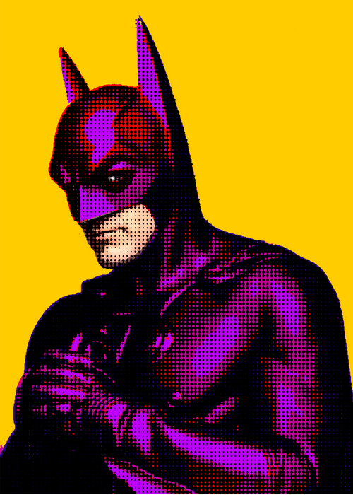
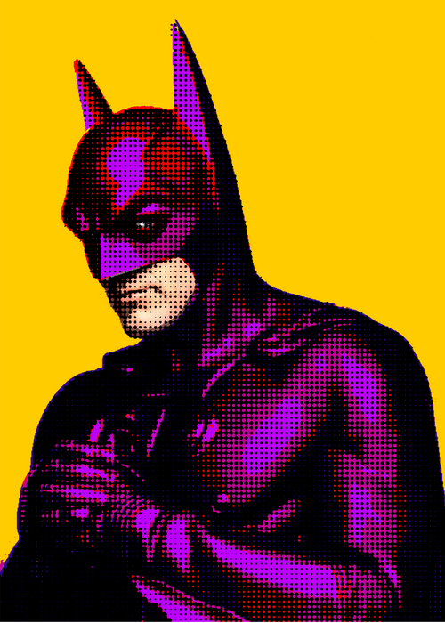

Pop-Art Style Portraiture
Pairing Fonts with Song Lyrics

Personal Logo Design

The following is a collection of work I created as an Emerging Media Maker Fellow at the Bay Area Video Coalition
Pop-Art Style Portraiture
Pairing Fonts with Song Lyrics
Personal Logo Design